Animação CSS
O que são:
Animações na web são transformações visuais em elementos de uma página de internet
(como textos, imagens, botões e menus) que ocorrem de forma fluida ao longo do tempo.
O principal objetivo de uma animação não é apenas tornar o site "bonito", mas sim simular as leis
da física do mundo real em uma tela digital, tornando a experiência de navegação mais
natural, intuitiva e agradável para o usuário.
Falando mais tecnicamente, as propriedades de animação do CSS possibilitam aplicar movimentos e interatividade
aos elementos de uma página web usando apenas código CSS, de maneira simples e sem precisar de JavaScript ou
outras linguagens.
Essas propriedades são usadas para definir, controlar e manipular animações,
que são sequências de estados visuais que podem ser aplicadas a um elemento HTML.
Eras da animação
Historicamente, o movimento na internet passou por três grandes eras:
• A era do GIF animado: Imagens pré-renderizadas, pesadas e sem interação com as ações do usuário.
• A era do Adobe Flash: Uma tecnologia proprietária que dominou os anos 2000, mas que exigia plug-ins pesados,
consumia muita bateria, tinha graves problemas de segurança e acabou sendo descontinuada.
• A era moderna (JavaScript e CSS): Onde o próprio navegador calcula e renderiza os movimentos nativamente.
No cenário atual do desenvolvimento web, as animações desempenham um papel fundamental na Experiência do Usuário (UX)
e na Interface do Usuário (UI) por meio de três funções principais:
• Feedback Visual: Mostrar ao usuário que uma ação deu certo. Por exemplo, quando um botão diminui levemente
de tamanho ao ser clicado, simulando um botão físico.
• Orientação Espacial: Ajudar o usuário a entender de onde um elemento veio e para onde ele foi. Por exemplo,
um menu lateral que "desliza" para dentro da tela em vez de simplesmente aparecer do nada.
• Gerenciamento de Expectativa: Diminuir a percepção do tempo de espera por meio de barras de carregamento
animadas (spinners), mantendo o usuário engajado.
Com a evolução dos navegadores e dos padrões da W3C (órgão que dita as regras da internet), o CSS (Cascading Style Sheets) deixou de ser apenas uma ferramenta de formatação estática e se tornou uma das ferramentas mais poderosas para criar esses movimentos. Através de propriedades nativas de transição e quadros-chave (keyframes), o CSS permite criar desde microinterações sutis até coreografias visuais complexas, garantindo alta performance, leveza e acessibilidade sem a necessidade de sobrecarregar o site com códigos pesados de JavaScript.
Transição
A transição no CSS permite alterar os estilos de um elemento de forma suave
e gradual, evitando uma mudança brusca e instantânea. Para que uma transição ocorra, ela sempre necessita de um
gatilho de ativação disparado pelo usuário, sendo o mais comum o ato de passar o mouse por cima do elemento (:hover).
Abaixo, você pode ver a diferença prática. Passe o mouse sobre os botões para ver como a transição transforma uma mudança seca em um movimento natural e agradável:
O comportamento de uma transição é ditado por quatro propriedades fundamentais do CSS:
transition-property: Define especificamente qual estilo vai mudar suavemente (por exemplo: background-color, width, opacity ou a palavra all para aplicar a tudo).
transition-duration: Determina o tempo que a mudança vai levar para se completar (ex: 0.3s, 1s). Se essa propriedade não for definida, o valor padrão é 0 e o efeito continua seco e instantâneo.
transition-timing-function: Controla o ritmo e a aceleração do movimento. Ela define se a transição vai começar rápida e terminar devagar (ease-out), começar devagar e acelerar (ease-in), ou manter uma velocidade constante do início ao fim (linear).
transition-delay: Define um tempo de espera em segundos ou milissegundos antes que a animação realmente comece a acontecer após o gatilho ser acionado.
A principal característica que diferencia uma transição de uma animação completa é o seu fluxo linear de ida e volta: ela move um elemento do Ponto A ao Ponto B enquanto o gatilho estiver ativo. Assim que o usuário retira o gatilho (como tirar o mouse de cima do elemento em um efeito :hover), o elemento faz o fluxo inverso, voltando linearmente do Ponto B para o Ponto A.
Animações
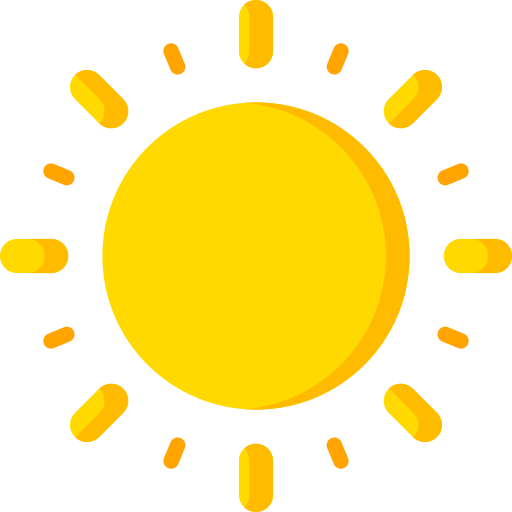
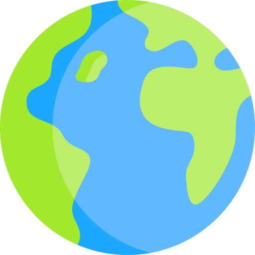
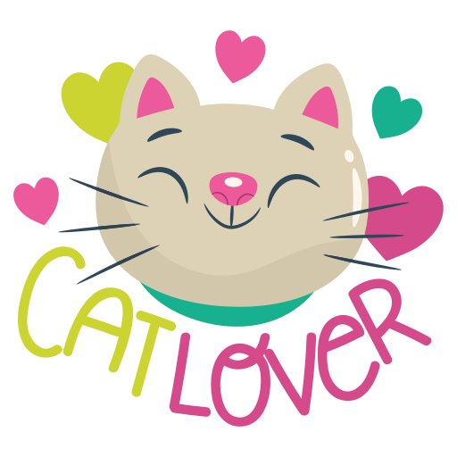
Pilares da Animação CSS.
Os pilares da animação CSS são compostos por três elementos principais que,
combinados, permitem criar movimentos fluidos e controlados em elementos HTML.
São eles: KeyFrames (@keyframes),
Propriedades de Animação (animation) e Funções de Tempo (Easing/ animation-timing-function).
@Keyframes
O @keyframes é a regra do CSS que define os passos de uma animação: em cada momento
(from/to ou porcentagens), você diz como o elemento deve estar.
O navegador cria sozinho o movimento entre esses passos. Depois, a animação é aplicada ao
elemento com animation, usando o nome que você deu ao @keyframes.
1. Como escrever: use a palavra
@keyframes, depois o nome que você escolher e, dentro das chaves, os passos da animação.
@keyframes nome-da-animacao {
from { /* estilo inicial */ }
to { /* estilo final */ }
} 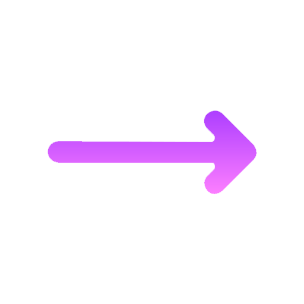
@keyframes mudar_de_Cor {
from {background-color: #8A00C4;}
to {background-color: #FF13F0;}
}2. Duas formas de marcar os passos:
from e to servem para animações simples (só começo e fim).
Para vários passos, use porcentagens: 0%, 50% e 100%.
@keyframes pular {
0% {transform: translateY(0);}
50% {transform: translateY(-80px);}
100% {transform: translateY(0);}
}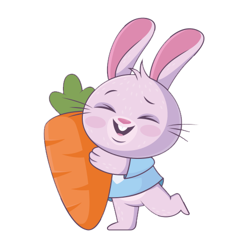
3. O que colocar dentro dos passos: propriedades que podem ser animadas, como:
transform(mover, girar, aumentar, inclinar),opacity(aparecer e sumir),filter(desfocar, escurecer, clarear, mudar as cores), cores (background-color),border-radius(arredondar os cantos, de quadrado a círculo).
💡Dica: Dê preferência a transform e opacity, que deixam a animação mais leve.
4. Exemplo real deste site: os quadrados do
topo da página usam este @keyframes. Em 0% não há giro, em 50% os cantos ficam mais
arredondados e em 100% o quadrado completa uma volta.
@keyframes girar-quadrado {
0% {transform: rotate(0deg); border-radius: 4px;}
50% {border-radius: 25px;}
100% {transform: rotate(360deg); border-radius: 4px;}
}5. Como ligar ao elemento: o
@keyframes sozinho não faz nada. Ele só vira animação quando você usa
animation com o mesmo nome. Dá para aplicar várias animações no mesmo elemento,
separando por vírgula, como nos quadrados do topo.
.quadrado1 {
animation: girar-quadrado 6s ease-in-out infinite,
mudarCor 6s ease-in-out infinite;
}Propriedades de Animação
As principais propriedades de animação em CSS são:
animation-name: Especifica o nome da regra @keyframes que define a animação.
Cada @keyframes contém os estilos que devem ser aplicados em diferentes momentos da animação.
NO CSS:
@keyframes desvanecer {
from {opacity: 1;}
to {opacity: 0;}
}
@keyframes piscar {
0%, 100% {opacity: 1;}
50% {opacity: 0.2;}
}
@keyframes surgir {
from {opacity: 0; transform: translateY(20px);}
to {opacity: 1; transform: translateY(0);}
}
.gato1 {animation-name: desvanecer;}
.gato2 {animation-name: piscar;}
.gato3 {animation-name: surgir;}
animation-duration: Define o tempo total que a animação deve levar para completar um ciclo.
NO CSS:
@keyframes homem_deslocar{
from { transform: translateX(-25px); }
to { transform: translateX(75px); }
}
.homem{
animation: homem_deslocar 2s ease-in-out
infinite alternate;
}
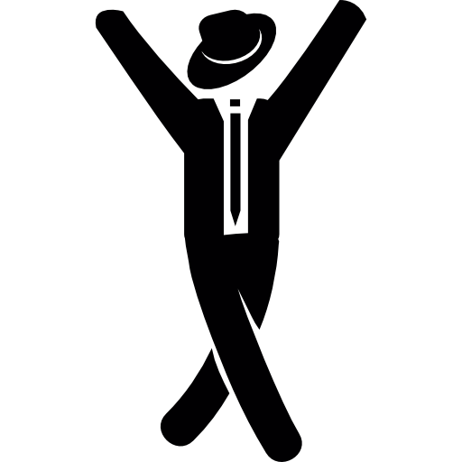
animation-timing-function: Controla a velocidade da animação ao longo do tempo, permitindo aceleração, desaceleração ou variações na velocidade.
NO CSS:
@keyframes correr {
0% {transform: translateX(0);}
80% {transform: translateX(175px);}
100% {transform: translateX(175px);}
}
.t_linear {
animation: correr 5s linear infinite;
}
/* nas outras muda só a função:
ease-in, ease-out,
ease-in-out e steps(6) */
Todas as bolinhas percorrem a mesma distância no mesmo tempo. O animation-timing-function muda só a forma como a velocidade varia durante o caminho.
animation-delay: Especifica o atraso antes que a animação comece.
NO CSS:
@keyframes pula_canguru {
0%, 100% {transform: translateY(0);}
50% {transform: translateY(-90px);}
}
.canguru_pula {
animation: pula_canguru 1s
ease-in-out infinite;
}
.canguru_atraso {
animation-delay: 4s;
}
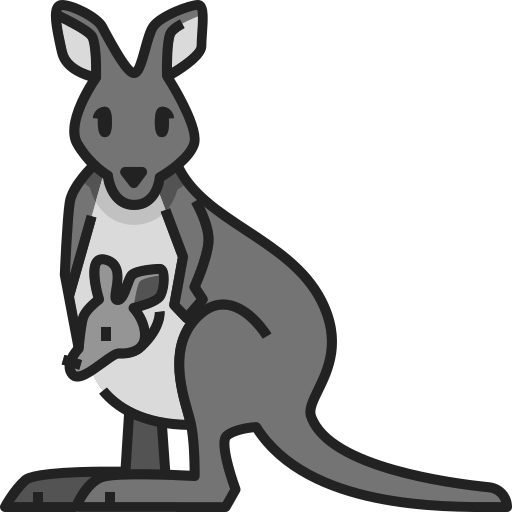
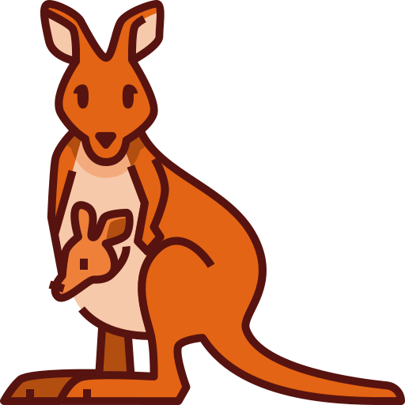
Passe o mouse na caixa para começar.
animation-iteration-count: Determina quantas vezes a animação deve repetir.
NO CSS:
.sapo {
animation-name: pular_sapo;
animation-duration: 1s;
}
.um {animation-iteration-count: 1;}
.tres {animation-iteration-count: 3;}
.sempre {animation-iteration-count: infinite;}
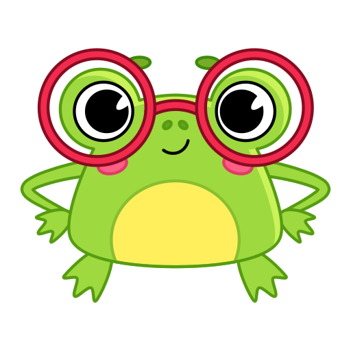
1 vezPasse o mouse na caixa para começar.
animation-direction: Define se a animação deve ser reproduzida na direção normal, inversa, alternativa ou alternativa inversa.
NO CSS:
.quadrado_direcao {
animation-name: mover_quadrado;
animation-duration: 2s;
animation-iteration-count: infinite;
}
.normal {
animation-direction: normal;
}
.inversa {
animation-direction: reverse;
}
.alternativa {
animation-direction: alternate;
}
.alternativa_inversa {
animation-direction: alternate-reverse;
}
@keyframes mover_quadrado {
from {transform: translateX(0);}
to {transform: translateX(100px);}
}
Passe o mouse na caixa para começar.
animation-fill-mode: Especifica os estilos que devem ser aplicados antes e depois da execução da animação.
NO CSS:
@keyframes andar_carrinho {
0% {transform: translateX(0);}
100% {transform: translateX(100px);}
}
.carrinho {
animation: andar_carrinho 2s ease-in-out;
animation-fill-mode: forwards;
}
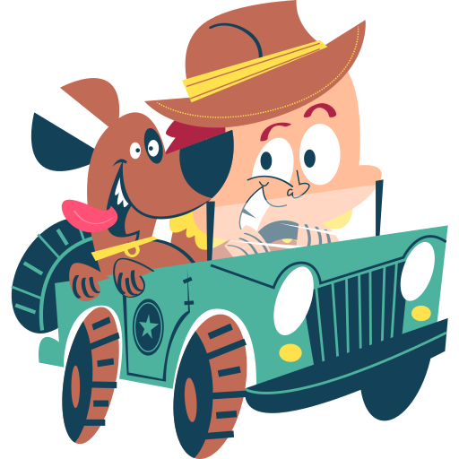
Passe o mouse na caixa para começar.
animation-play-state: Permite pausar ou retomar a animação.
NO CSS:
@keyframes pular_gatinho {
0%, 100% {transform: translateY(0);}
50% {transform: translateY(-50px);}
}
.gatinho {
animation: pular_gatinho 1s
ease-in-out infinite;
}
.demo_play:hover .gatinho {
animation-play-state: paused;
}
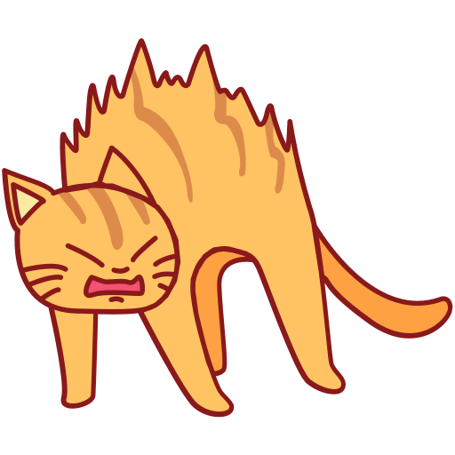
Passe o mouse na caixa para pausar.
animation-timeline: Propriedade CSS que especifica a timeline usada para controlar o progresso de uma animação. Integrada às especificações oficiais do CSS, ela permite associar uma animação a diferentes tipos de timeline: a linha do tempo padrão baseada em tempo (DocumentTimeline), a scroll progress timeline (usando scroll() ou nomes personalizados) e a view progress timeline (usando view() ou nomes personalizados). Atualmente, a propriedade conta com amplo suporte cross-browser em sua versão Baseline, o que a torna totalmente pronta para uso em produção.
NO CSS:
@keyframes girar_sol {
from {transform: rotate(0deg) scale(0.6);}
to {transform: rotate(360deg) scale(1.2);}
}
.solzinho {
animation: girar_sol linear;
animation-timeline: scroll();
}
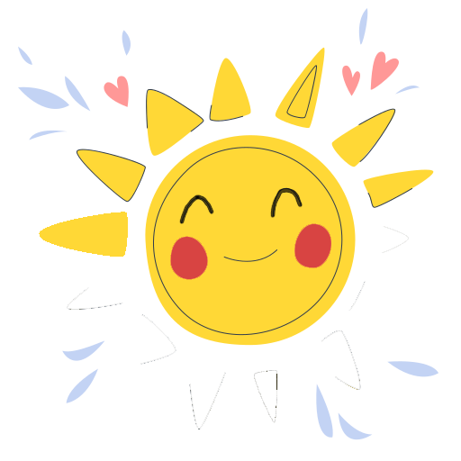
Role a barra dentro da caixa para o solzinho girar.
Transform
A propriedade transform muda a forma, a posição e o tamanho de um elemento sem mexer nos vizinhos.
Cada tipo de mudança é uma função:
translate(): Move o elemento no eixo X (horizontal) e no eixo Y (vertical). Valores positivos vão para a direita e para baixo.
NO CSS:
.t_translate {
transition: transform 0.6s;
}
.demo_t:hover .t_translate {
transform: translate(60px, -30px);
}
Passe o mouse na caixa para começar.
rotate(): Gira o elemento em graus (deg). O giro acontece em torno do centro, que é o transform-origin padrão.
NO CSS:
.t_rotate {
transition: transform 0.6s;
}
.demo_t:hover .t_rotate {
transform: rotate(45deg);
}
Passe o mouse na caixa para começar.
scale(): Aumenta ou diminui o elemento. O valor 1 é o tamanho original, 1.5 é 50% maior e 0.5 é a metade.
NO CSS:
.t_scale {
transition: transform 0.6s;
}
.demo_t:hover .t_scale {
transform: scale(1.5);
}
Passe o mouse na caixa para começar.
skew(): Inclina o elemento, em graus, no eixo X e/ou no eixo Y, como se ele fosse "empurrado" de lado.
NO CSS:
.t_skew {
transition: transform 0.6s;
}
.demo_t:hover .t_skew {
transform: skew(25deg, 10deg);
}
Passe o mouse na caixa para começar.
Combinando funções: Várias funções podem ficar no mesmo transform, separadas por espaço. A ordem importa: rotate() translateX() não leva ao mesmo lugar que translateX() rotate().
NO CSS:
.t_combinar {
transition: transform 0.6s;
}
.demo_t:hover .t_combinar {
transform: translateX(50px)
rotate(45deg);
}
Passe o mouse na caixa para começar.
Integrantes
- Alanis Aparecida Laureano Domingues
- Fernando Terumasa Ikeda Son
- Jéssica Caroline Latance
- Sara da Silva Gongora
- Talita Ramos Lauriano Akyama